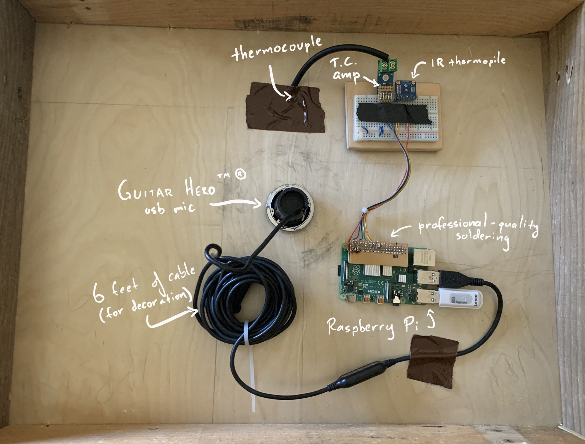
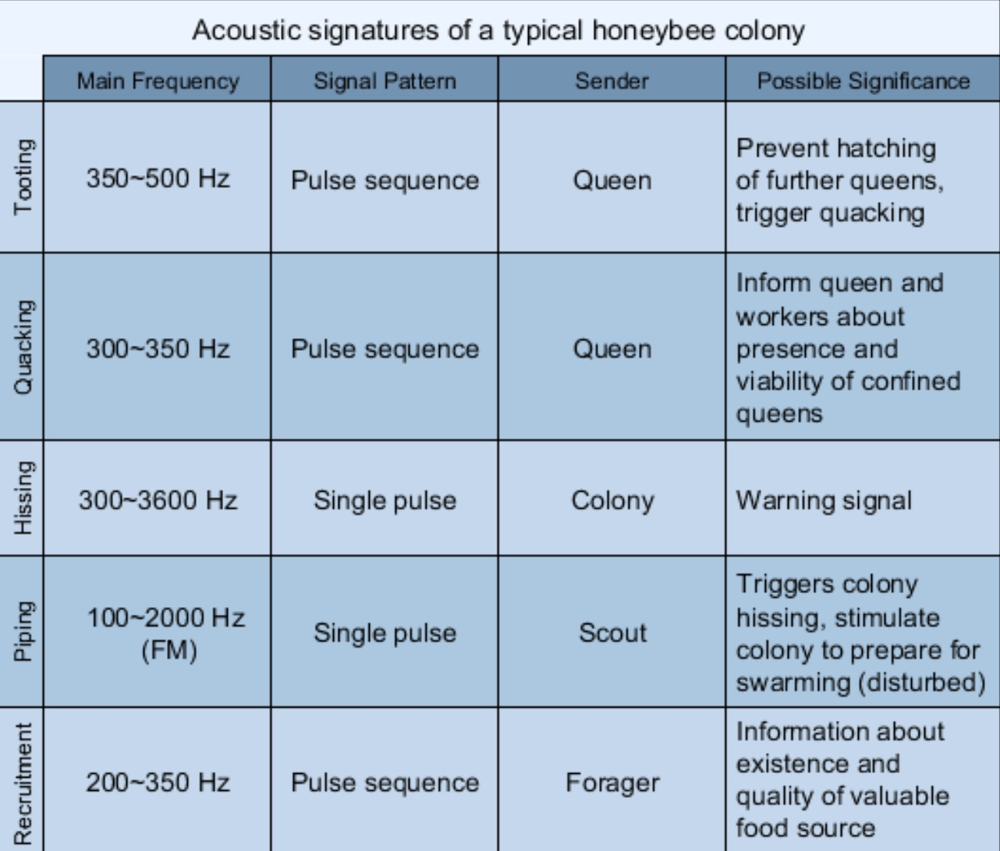
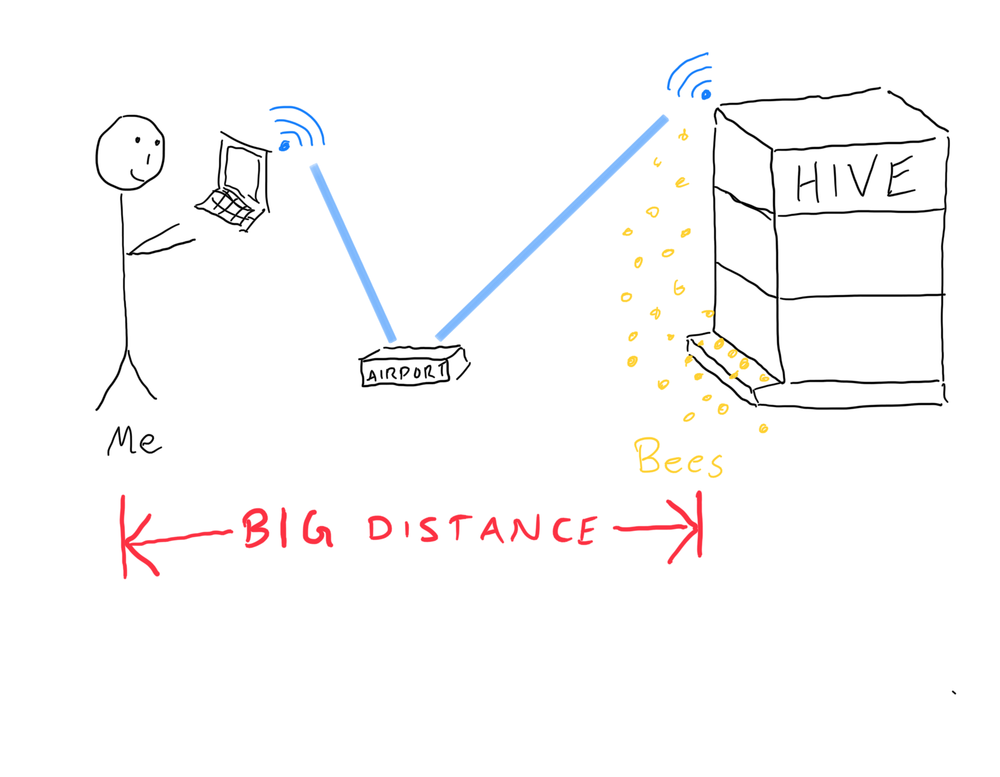
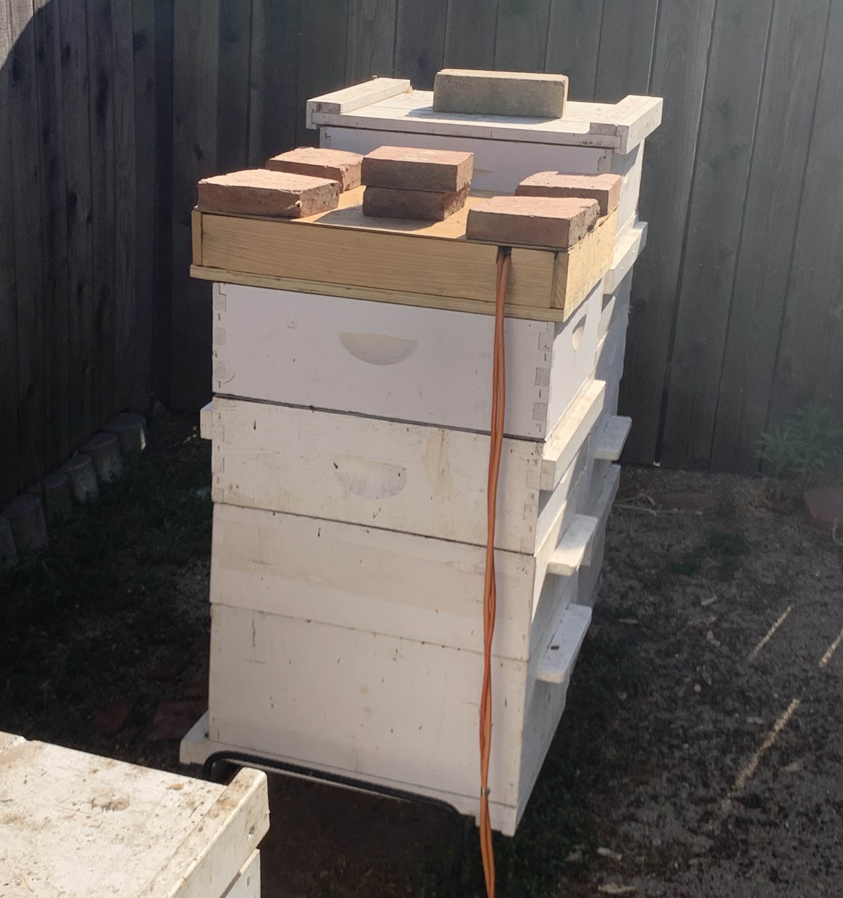

Prototype For Hive Monitoring
I’m using a super simple setup for hive monitoring. The brains of the operation is a Raspberry Pi 4 running Raspbian. Here’s what it looks like on the inside:

Temperature Data Collection
I’m measuring hive temperature with two sensors:
- k-type thermocouple and amplifier (MAX6675) for internal temperature
- infrared thermopile (TMP006) for ambient temperature
Ideally I’d use just thermocouples, but these are the only sensors I have on hand.
I’m using a python library to read the temperature every ten seconds. The logging scheme is decidedly un-fancy – I’m just appending a text file with timestamped readings. Here’s the basic idea:
while True:
with open("temp.txt", "a") as f:
dat = datetime.datetime.now()
t1, t2, t3 = 0, 0, 0
try:
t1 = sensor1.readTempC()
t2 = sensor2.readDieTempC()
t3 = sensor2.readObjTempC()
except:
print "An error occured"
f.write(','.join([dat, t1, t2, t3]) + "\n")
time.sleep(10.0)
Initially, I wrote the script with the open statement outside the loop, like so…
with open("temp.txt", "a") as f:
while True:
f.write('something')
time.sleep(10.0)
… to save on the cost of reopening the file for each iteration of the loop. But this code doesn’t update the file after every call to f.write('...') , thanks to the magic of unnecessary file buffering.
This can be fixed by calling f.flush() after every f.write(), or specifying a buffer length of 0: open('temp.txt', 'a', 0).
Audio Data Collection
Audio is coming from an old Guitar Hero USB mic I cannibalized. On the Pi, I’m using arecord in a bash script more or less like this:
while [true]
arecord --device sysdefault:CARD=1 --format S16_LE --rate 11025 --channels=1 --duration 3600 out.wav || break;
This is just recording an hour (3600 seconds) of mono (1 channel) sound (16 bit samples, little endian) at 11025 samples per second.
Why am I recording at 11025 Hz instead of the standard 44.1kHz? Some papers12 indicate that bee communication sounds are composed of a low fundamental frequency between 300 and 600Hz and the corresponding harmonics. Therefore, the Nyquist sampling rate is 1200 Hz, but that makes for some gnarly audio.

Besides, the standard 44.1kHz stereo signal is ~10MB per minute. The mono 11kHz signal is ~1.25 MB per minute, which is a tolerable 1.8GB per day. For data safety and ease of processing, I’m recording the audio data as 1-hour wav files.
Networking
The Pi is connected via WLAN to an old AirPort Extreme. From the house, I can connect to the network and ssh into the Pi to download the data, modify scripts, etc. Here’s a technical schematic showing this network configuration:

To keep data collection running after I close the session, I’m running tmux and detaching. There are other ways to do this, like nohup, screen, disown, bg, etc., but tmux is part of my regular workflow.
From my laptop, I can run a small script to switch networks and download the data every so often:
#!/bin/bash
echo "Connecting to beenet..."
networksetup -setairportnetwork en0 beenet password
echo "Downloading data..."
scp pi@raspberrypi.local:~/bees/temp.txt .
echo "Connecting to home network..."
networksetup -setairportnetwork en0 homenet password
This data collection scheme is fine for prototyping, but would be very inconvenient for live metrics.
Housing
These sensors are arranged in a crappy box made from literal garbage – plywood and pallet wood I found in a dumpster. Here’s what it looks like all assembled:

-
Qandour, Amro & Ahmad, Iftekhar & Habibi, Daryoush & Leppard, Mark. Remote Beehive Monitoring using Acoustic Signals. Acoustics Australia / Australian Acoustical Society. 42. 204-209. 2014. ↩
-
M. Hrncir, F. G. Barth, and J. Tautz, “32 vibratory and airborne-sound signals in bee communication (hymenoptera),” Insect Sounds and Communication: Physiology, Behaviour, Ecology, and Evolution, p. 421, 2005. ↩